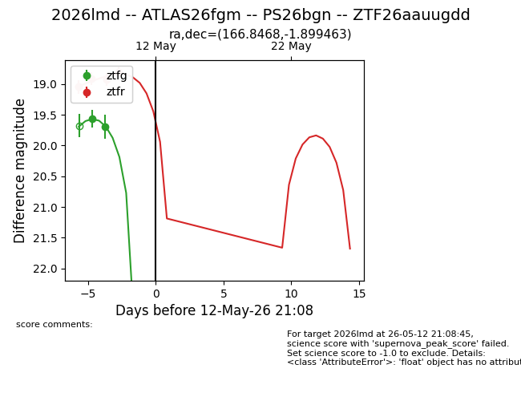
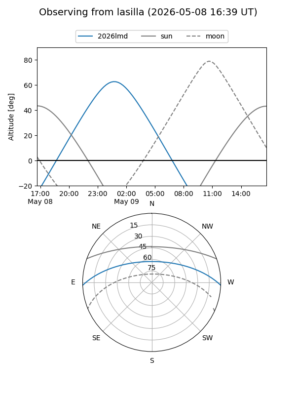
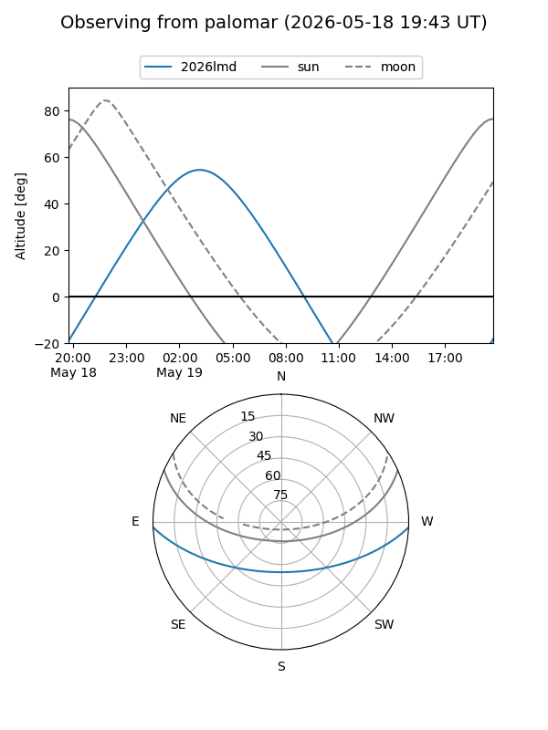
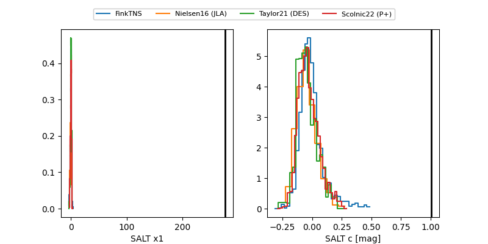

2026lmd
Target 2026lmd at 2026-05-12 21:10
Aliases and brokers:
FINK: link
Lasair: link
ALeRCE: link
TNS: link
YSE: link
alt names
ZTF26aauugdd (ztf,fink_ztf)
2026lmd (tns,yse)
ATLAS26fgm (atlas)
PS26bgn (panstarrs)
Coordinates:
equatorial (ra, dec) = 166.8468,-1.89946
equatorial (HMS+DMS) = 11:07:23.24,-01:53:58.07
galactic (l, b) = (257.9801,+51.65380)
Flags:
Photometry:
last ztfg=19.70, ztfr=18.81
2 ztfg, 4 ztfr detections
Lightcurve

Visibility


Additional plots
